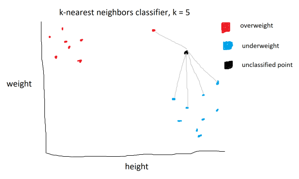

Classification is a supervised machine learning process that categorizes data points into classes. The K-Nearest Neighbors model is a classification model that works by looking at a data point’s k nearest neighbors and seeing which class has more closer points.

In the example above, there are two classes: overweight and underweight. They are determined by two parameters: height and weight. A new, unclassified point is passed in. The algorithm proceeds by identifying the k=5 nearest neighbors. The new point would be classified as underweight, as there are more neighbors from the underweight class.
The k-nearest neighbors algorithm uses the euclidean distance between points, which is given by the following formula:
\[d(p, q) = \sqrt{\sum_{i=1}^n (q_i-p_i)^2}\]This formula calcualtes the distance between two points, p and q, in n dimensional space by taking the square root of the sum of the squared distances between the coordinates of two points. In 2D, the formula is:
\[d(p, q) = \sqrt{(q_1-p_1)^2 + (q_2-p_2)^2}\]In 3D:
\[d(p, q) = \sqrt{(q_1-p_1)^2 + (q_2-p_2)^2 + (q_3-p_3)^2}\]As you can see, for each increase in dimension, we sum up another \((q_i-p_i)^2\) term, which is why the summation is there in the generalized eulidean distance formula.
Import the following libraries.
import numpy as np
import matplotlib.pyplot as plt
from collections import Counter
numpy is used for working with arrays, matplotlib for visualizing the results, and Counter for counting the appearances in arrays.
points = {'blue': [[2,4], [1,3], [2,3], [3,2], [2,1]],
'orange': [[5,6], [4,5], [4,6], [6,6], [5,4]]}
new_point = [3,3]
Next, we create a dictionary with our labaled training data and a new point that we want to classify.
class K_Nearest_Neighbors:
def __init__(self, k=3):
self.k = k
def fit(self, points):
self.points = points
We then define a class K_Nearest_Neighbors that has a constructor that k to a default value of 3 if no other value is provided. Then, we create an instance method fit that takes in a set of data points and stores it to the instance variable self.points.
def euclidean_distance(self, p, q):
return np.sqrt(np.sum(np.array(p) - np.array(q)) ** 2)
We then create an instance method euclidean distance that takes in two points and returns the euclidean distance between them using the formula above.
def predict(self, new_point):
distances = []
for category in self.points:
for point in self.points[category]:
distance = self.
euclidean_distance(point, new_point)
distances.append([distance, category])
categories = [category[1] for category in
sorted(distances)[:self.k]]
result = Counter(categories).most_common(1)[0][0]
return result
Finally, we create a predict instance method that takes in a new point. A new list distances is created to store each calculated distance between the new_point and the data points stored in the self.points instance variable (set by the fit method). We then loop through the data points by category, calling the euclidean_distance method on each data point. The resulting distance between each data point and the new_point is appended to the distances list, as well as the data point’s category. When the loop finishes, distances will be a list of tuples of length 2.
Next, create a list categories using python’s list comprehension. sorted(distances) sorts the distances list in aescending order, based on the first argument in each sublist. We then loop through the sorted list of distances, extracting the second argument (category) of each sublist using category[1]. The list is then indexed from 0 to k using [:self.k]. The resulting categories list is the k nearest points labeled by category.
The result of the classification is calculated by applying Counter(categories), which generates a map with each category mapped to it’s frequency. the most_common(1) method is applied, which returns the most common category as tuple inside a list. [0][0] is used to extract the most common category, which is the result of the classification.
model = K_Nearest_Neighbors(k=3)
model.fit(points)
print(model.predict(new_point))
Apply the algorithm by instantiating the class and calling the fit and predict methods.
The result:
blue
We can check our result by plotting the points.